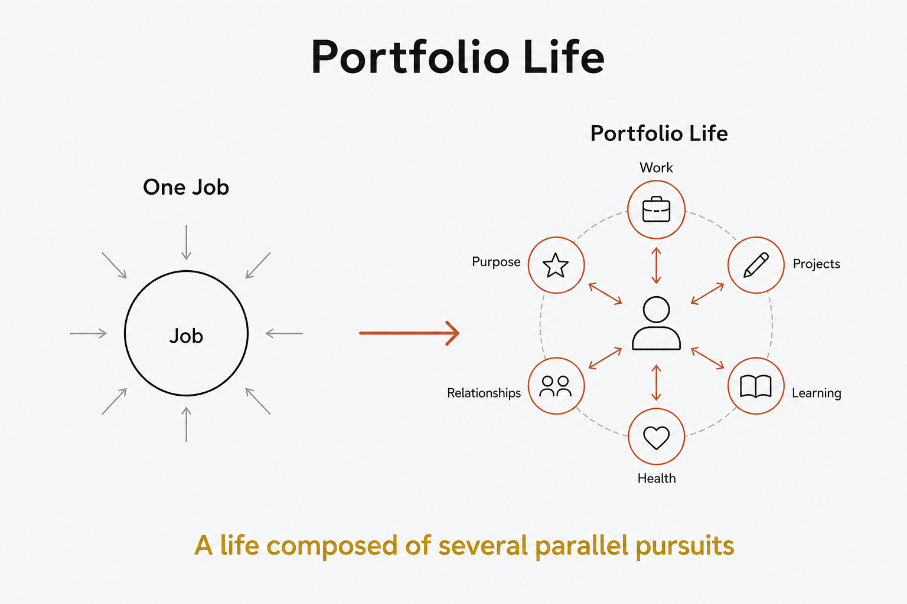

Life design
A life composed of several parallel pursuits — work, projects, learning, purpose — rather than one job that defines you.

The conventional model puts one job at the center and lets it define you; a Portfolio Life spreads across several parallel pursuits at once — paid work, creative projects, learning, service, relationships, health — each contributing something the others don't. Identity stops depending on a single role, which makes the whole more resilient: when one strand quiets down, the others carry it. It pairs naturally with the other life-design concepts — the strands map onto life domains, they're steered by intentions rather than a single career goal, and the mix is prototyped and rebalanced over time rather than fixed once. Structure is what keeps a portfolio from becoming mere busyness: without a way to see the strands and how they're actually being fed, "many pursuits" collapses into scattered attention. Seen clearly, it's a deliberately diversified life — spread on purpose, not by drift.